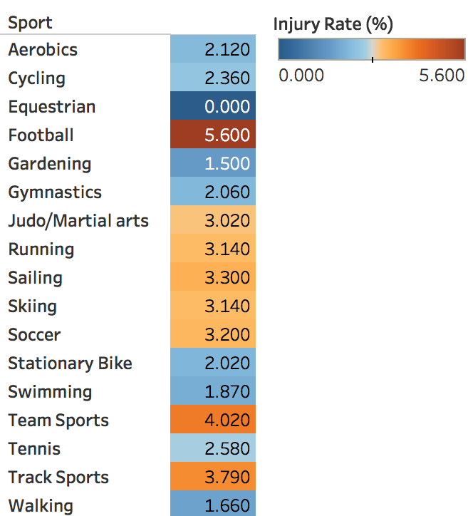
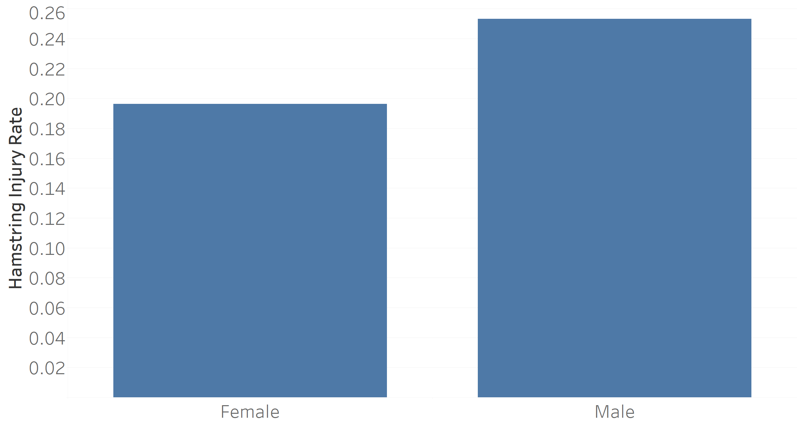
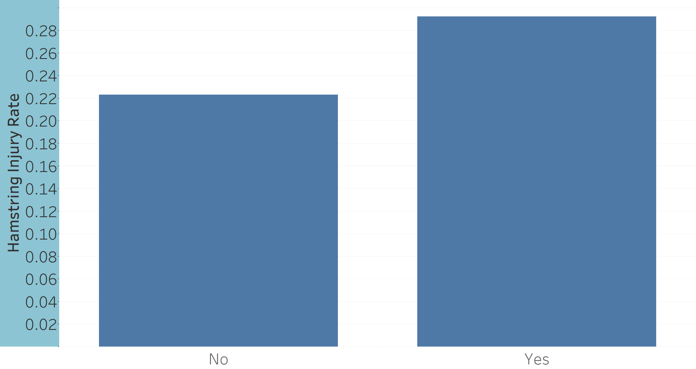

Sports and Recreation Group
"The Show: Telling the Story of Running-related Injuries"
PREDICT-455-56 Spring 2017
Baseer Ahmad
Luis Mesen
Tracy Valentine
Jen Vroomen
Press spacebar to start The Show or use the arrow keys (← →) to navigate.
Agenda
- Introduction:
A broad introduction to running as a sport and the injuries associated with running
- Discussion:
Examining running related injuries and potential key indicators leading to these injuries
- Conclusion:
Measuring chronic and acute load to avoid running related injuries
Introduction: A Running World
Running is an activity that most of us are familiar with.
People of all ages and demographics enjoy running as a sport or hobby
Surface Type For Running
- Most runners do their exercising on the road or trail.
- Different surface types will affect injury rates.
Running Frequency
The average runner is most likely to run 3 times per week.
Ultra-Distance Athletes
Of course, some people run even more. Much more. Ultramarathons are races that are longer than a regular marathon. The most common distances are 50/100 kilometers or miles.
This map depicts the percentage of a state's population that has completed one or more ultra-endurance running event.
Dark blue identifies states with the highest percentage of ultra-distance runners while the coral color indicates states with the lowest percentage.
Age Groups of Runners from 1993 Auckland Citibank Marathon
Using data from the 1993 Auckland Citibank Marathon, this visualization outlines the ages of the runners participating. The largest group of runners are over 40 years of age.
Gender of Runners from 1993 Auckland Citibank Marathon
Using data from the 1993 Auckland Citibank Marathon, this visualization outlines the gender of the runners participating. Males make up the overwhelming majority of this data set.
Risk of Running Injury vs Other Sports

This table shows the likelihood of injury associated with various sports.
Red indicates a higher injury rate while blue indicates a lower injury rate.
Perhaps unsurprisingly, football has the highest rate of injury, however, running also ranks above average.
Defining Running Injury: A Systematic Review
Running injuries are a common event in the literature, as well. This word cloud was made from a collection of 31 definitions of "running injury" as stated in various academic journals. The large words correspond with the highest frequency usage in these definitions.
The most common running injuries are patellofemoral pain syndrome (pain in the front of the knee) and shin splints.
Ankle sprains and hamstring strains have the lowest incidence of injury in runners
Discussion
The 1993 Auckland Citibank Marathon: A case study in running injuries
Quadricep Injuries By Age Group
- 60% of participants in the 1993 Auckland Citibank Marathon suffered front quadricep injuries.
- This visualization compares front quadricep injuries between the age groups presented.
- Injury rates for the quadricep peaks in the middle age group and tapers back down for the older group.
Calf Injuries By Age Group
- 45% of participants in the 1993 Auckland Citibank Marathon suffered calf injuries.
- These visualizations compare calf injury rates between age groups and gender.
- Younger runners, as well as males, appear to suffer from a higher incident rate of calf injuries.
Calf Injuries by Gender
- 45% of participants in the 1993 Auckland Citibank Marathon suffered calf injuries.
- These visualizations compare calf injury rates between age groups and gender.
- Younger runners, as well as males, appear to suffer from a higher incident rate of calf injuries.
Knee Injury Based on Marathon Experience
- Over 70% of participants from the 1993 Auckland Citibank Marathon had run a marathon before.
- For those who had never run one, the likelihood of them getting a knee injury was much greater.
Hamstring Injuries by Gender

- 24% of participants in the 1993 Auckland Citibank Marathon suffered hamstring injuries.
- These visualizations compare hamstring injury rates between gender and experience.
- First time marathoners as well as males have higher incident rates for hamstring injuries.
Hamstring Injuries Based on Marathon Experience

- 24% of participants in the 1993 Auckland Citibank Marathon suffered hamstring injuries.
- These visualizations compare hamstring injury rates between gender and experience.
- First time marathoners as well as males have higher incident rates for hamstring injuries.
Hip Injuries by Gender
Using data from the 1993 Auckland Citibank Marathon, this visualization shows that women are more likely to suffer from hip injuries than men.
Discussion
Defining a predictive injury model
Defining Load
- Internal Load:
The athlete's perception of exertion. This can be quantified in terms of perceived intensity, minutes, etc.
- External Load:
The actual measure of an athlete's exertion by GPS, accelerometers, gyroscopes, etc.
- Chronic Load:
The cumulative training dose that builds up over a long period of time.
- Acute Load:
The training does of an athlete over a shorter period of time.
Relationship Between Miles Per Week and Running Related Injury
- Running related injury odds ratios differ for men and women based on miles run per week.
- In general, increasing acute load of running miles will increase the injury incident odds.
Relationship Between Duration of Workout and Running Related Injury
- This data shows that longer duration runs lead to a higher incidence rate of injury.
- The trend line fit to the data points is a 4th-degree polynomial indicating that injury risk grows much faster at higher acute load durations.
- Also, the nature of injury incidence at workout time was increased among novice runners.
The training-injury prevention paradox
- Tim Gabbett presents a theory in which athletes who are accustomed to high training loads will experience fewer injuries than those training at lower loads
- Murray, Gabbett, Townshend, and Blanch expand on this theory to provide recommended workload ratios
Proposal of Using Acute: Chronic Load As A Solution For Assessing Injury Risk
Despite the general trend of increased acute load leading to more injuries, we see a significant difference in the risk of running injury when athletes train under high chronic load conditions. This is an example of the training-injury prevention paradox
Conclusion

Using Load to Avoid Injury
Acute: Chronic Workload Recommendation

- For individuals looking to minimize their injury risk, it is recommended that they try to maintain an acute:chronic workload ratio between 0.8-1.3 during their training.
- Individuals with an acute:chronic workload ratio ratio of 1.5 or higher are at a greater risk of injury.
- Any spike or increase in acute load compared to chronic load would result in a higher likelihood of injury.
Injury Likelihood Based on Acute and Chronic Workloads

- This table depicts the likelihood of injury based on an athlete’s current acute and chronic workloads (taken as a percentage of their normal average).
- If an athlete ramps up their acute workload too quickly, they increase their chances for injury significantly.